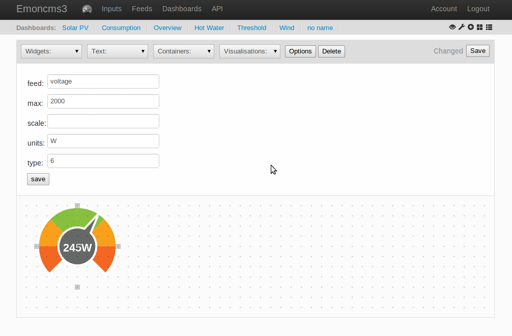

Is it possible to somewhere set a min/max value for a dial/gauge meter in a dashboard? I can't be the first looking for this, so I figured I'd ask...
I am pulling frequency info (among other data points) via RS-485 from a mains energy meter that is hooked up to the heating in the house here (yes... we're on all-electrical heating. no good, but that's how it is. The more reason to monitor it, I guess). The frequency typically varies between 49.9 and 50.1. but occasion has gone outside those limits.
In short: I am looking for a color coded dashboard dial that has a min value of 49 and a max of 51 (maybe with alert/red color towards either end?). Possible as of today, or should it go into the todo list?
Re: How to set min/max for gauge meter in dashboard?
You can set a max value with the default parameter like max="51" but you can't set a min value. I personally looked into the dail.js file (location: /var/www/emoncms/Views/dashboard/js/widgets) and you can change some colors and with of the color scale range but no min value option in the javascript... so it's not there.
And that's a huge downside of the dail widgets. because now you can't set ranges. like i would do for the voltage dail. (min 200 volt - max 250 volt, with a center needle of 225)
Re: How to set min/max for gauge meter in dashboard?
oh and off-topic:
Re: How to set min/max for gauge meter in dashboard?
There is also the centre zero gauge that I created from the standard gauge a few months ago - I use it to show import/export. It should be in the same file as the standard gauge. Shouldn't be too tricky to modify that one so that it's centre is not zero. If I get a chance I'll try and take a look.
Lloyd
Re: How to set min/max for gauge meter in dashboard?
Ok. Have this working now.Will try and post the code changes tomorrow.
Lloyd
Re: How to set min/max for gauge meter in dashboard?
You need to change two source files.
The attached dial_additions.txt contains an additional function that needs to be inserted into Vis/Dashboard/widgets/dial.js
The attached common_additions.txt contains extra code that needs to be inserted into Vis/Dashboard/common.js at the very end of function draw dials.
The dial is then called with html similar to:
Also attached is an image showing how it should appear.
My installation is a little out of date, so there may be some incompatibilities with the latest version.
Hope this helps
Lloyd
Re: How to set min/max for gauge meter in dashboard?
A yes I think we need a offset value option for the dial, so as to have it center around 50. Dial type 6 gives a centered at 0 type , a work around could be to subtract 50 from the frequency in input processing and have the dial show the deviation from 50Hz?
Are you using the draw editor? as in the screen below?

To embed the dial in an iframe, this can be done by embedding the whole dashboard in an iframe, like this (refresh the page if it does not show the first time):
http://emoncms.org/trystan/dialexampl?embed=1
Re: How to set min/max for gauge meter in dashboard?
Nice workaround there, Trystan. The power of input processing... :)